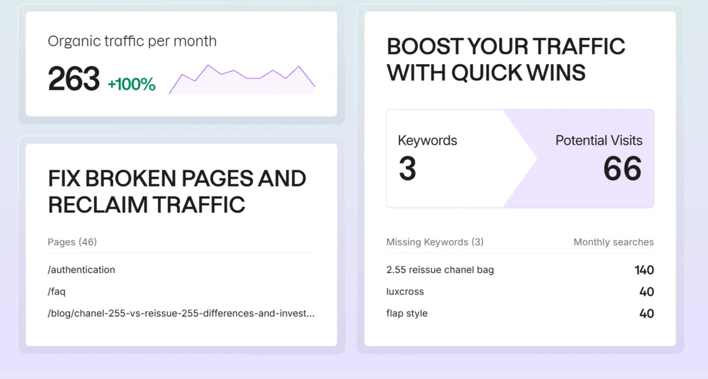
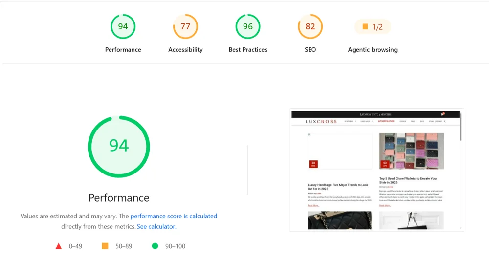

Luxcross
A luxury resale store with an empty website and a Dubai-only customer base. I built the voice and the search presence that opened the door to buyers worldwide.
Creative SEO Writer. Client project, 2024 to 2026.

The Context
Luxcross resells authenticated luxury bags. Chanel pieces on the home page sit between $5,000 and $5,600. When I joined, sales happened in person in Dubai only.
The website was close to empty. Fewer than ten people visited it, and even the basic on-page SEO had not been set up.
The Core Problem
A bag at that price needs trust before it needs traffic. The site gave Google nothing to rank and gave buyers nothing to believe. Anyone outside Dubai had no reason to find Luxcross, and no reason to trust it if they did.
The Struggle
Nobody can touch a $5,000 bag through a screen, so every page had to settle one question: is it real? With fewer than ten visitors, there was almost no reader data to learn from. Early choices leaned on research tools until real behaviour could guide me.
The Execution
- Audit first. The SEO report flagged 46 pages to repair, led by the authentication page, the FAQ and a blog post. It also showed three keywords the site had no page for, including 2.55 reissue chanel bag at 140 searches a month.
- Map buyer language. I used Semrush and Ahrefs to match keywords to how buyers talk: model names, flap styles and the Luxcross name itself.
- Create content that answers doubt. Product descriptions tackle authenticity head on. Blog guides compare bags, and styling editorials cover why, where, when and how to wear each piece.
- Set the on-page basics. Yoast kept titles and descriptions tidy, with keywords sitting inside the writing and not on top of it.
- Read, then repeat. Google Analytics and the SEO reports showed what worked, and that decided what I created next.
Tools: Semrush, Ahrefs, Yoast and Google Analytics.
The Win
The store now reaches buyers worldwide, not only in Dubai. About four Chanel bags sold in the first two months, and sales have passed $7,000 and are still counting.
The latest SEO report shows 263 organic visits a month, up 100%, from fewer than ten visitors when I started.

